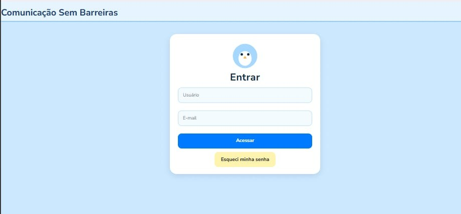

🚀 Projetos em Destaque

Comunicação Sem Barreiras
Aplicativo desenvolvido para promover a comunicação e a conexão entre crianças por meio de uma fala alternativa simples, intuitiva e inclusiva. O projeto tem como objetivo facilitar a expressão de crianças com dificuldades de fala, proporcionando uma ferramenta acessível, acolhedora e fácil de usar no dia a dia.

Site de Cadastros
Aplicação web desenvolvida para gerenciar informações de produtos e clientes de forma simples e eficiente. Permite o cadastro, edição, exclusão e listagem de dados, com foco em usabilidade e organização..